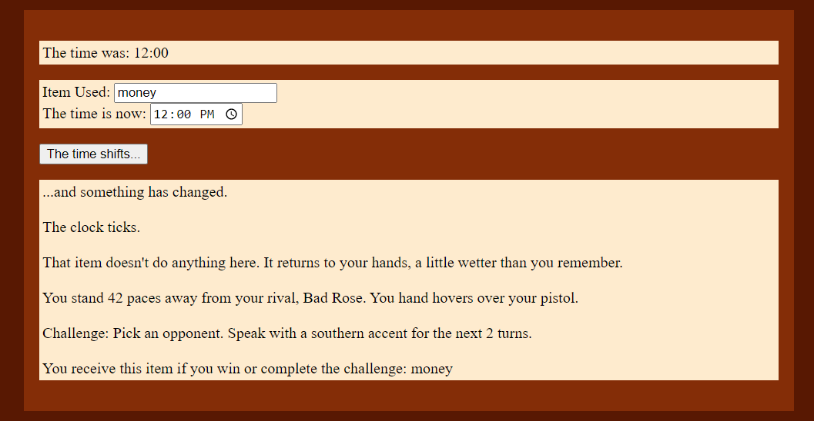
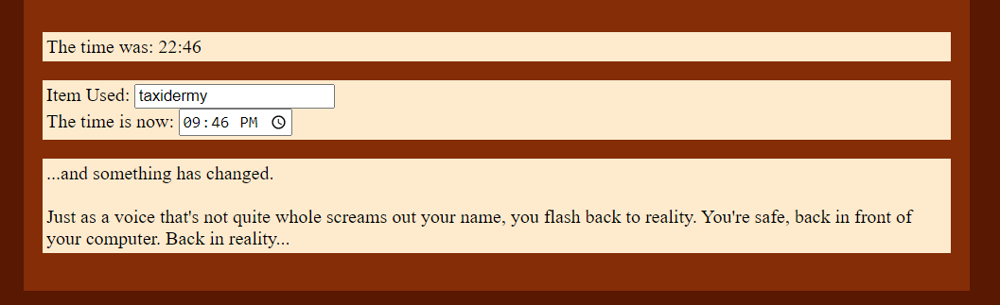

Morgan's Sojourn
Walkthrough
After reading the instructions, the players scroll down to the bottom of the page and hit “And then…”.
This generates a vision of the store and the world they find themselves in. It also opens up a section where they can see their current guess, input an item, or input a time guess. They can submit their time by hitting the ‘The time shifts…’ button.

They guess ‘12:00PM’, which changes the output and generates a challenge. They notice that this description has something to do with a duel of some sort and that ‘12:00PM’ was not the correct answer. The player who made the guess decides to complete the challenge and races to touch their nose against a player of their choice. They win and receive the item ‘money’.
They guess ‘12:00 PM’ again, but this time they attempt to use their item. Unfortunately, as indicated in the output, the item doesn’t do anything at this time so the item is returned to them and they can use it again. They decide to complete this challenge to get a second ‘money’ item they can use if they figure out when ‘money’ can be used.
They continue guessing and gaining items. Shown below, they use their ‘cowboy hat’ item and guess the time ‘05:00 PM’ or ‘17:00’. They thought that ‘cowboy hat’ might work at this time, because descriptions at this time seemed to do with duels and referenced westerns. The output shows that their hour guess is less than the correct time, so the hour is greater than 17. However, this uses up their ‘cowboy hat’ item. After a few more guesses and challenges, they narrow down their hour guess to before ‘23’ hours but after ‘17’ hours. They decide to try to figure out which items will give them information on the correct minutes.

After some testing, they realize the item they have unlimited access to, ‘taxidermy’ gives them minute information when the guess is at hour ‘4’.
They decide to use their unlimited item to keep guessing different minute values and determine what the correct minute value is. They decide to do some challenges to gain more items, while doing this testing. Eventually, they figure out that the correct minute value is ‘47’.
Now all they have to do is figure out what the hour value is. After some trial and error, they figure out the correct time is ‘09:46 PM’ or ‘22:46’. They guess that time and the game ends! They know this because the ‘The time shifts…’ button disappears and a brief message describing their character breaking from their vision appears.
